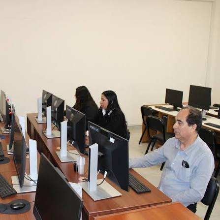

Ingeniería Informática
Facultad de Ingeniería Electrónica e Informática - UNFV
En la Universidad Nacional Federico Villarreal (UNFV) formamos profesionales altamente capacitados para liderar el desarrollo tecnológico y la transformación digital en el país. El programa académico está diseñado para que los estudiantes dominen tanto la arquitectura lógica del software como la infraestructura física de los sistemas de información corporativos.
Aprender a escribir el código utilizado para crear sistemas complejos y bases de datos masivas no requiere ser un experto desde el primer día. Con una metodología práctica y estructurada, la Ingeniería Informática dota a los futuros ingenieros de las herramientas conceptuales necesarias para tomar el control absoluto de la tecnología moderna, optimizando procesos y resolviendo problemas reales en beneficio de la sociedad peruana.
Nuestros estudiantes e investigadores avanzan con paso firme frente a los nuevos desafíos globales de la computación, participando de forma activa en proyectos orientados a la conectividad, las redes de datos y la seguridad de la información. La formación institucional promueve el pensamiento crítico y la innovación constante en la infraestructura tecnológica del entorno público y privado.

A continuación, presentamos un recurso audiovisual interactivo que detalla la visión, los objetivos estratégicos y el rol de nuestra facultad en la formación de líderes en ciencia y tecnología para el Perú contemporáneo.